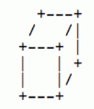
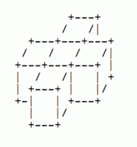

第一行，一个整数N，表示立方体的个数。
第二行至第N+1行，每行6个用空格隔开的整数，分别表示x1,y1,z1,x2,y2,z2.
input 1
1
0 0 0 1 1 1
input 2
2
0 1 0 3 2 1
1 0 0 2 3 1
output 1
6
output 2
22对于第一个样例

对于第二个样例

1<=N<=200,0<=x_i1,y_i1,z_i1,x_i2,y_i2,z_i2<=200,x_i1<x_i2,y_i1<y_i2,z _i1<z_i2